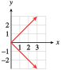
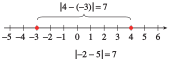
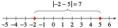

Exercises 2.8 Homework 2.2
¶For problems 1-10, simplify the expression according to the order of operations.
1.
\(-\abs{-9} \)
\(-(-9) \)
\(-9\)
\(9\)
2.
\(2-(-6) \)
\(2-\abs{-6} \)
3.
\(\abs{-8}-\abs{12} \)
\(\abs{-8-12} \)
\(-4\)
\(20\)
4.
\(\abs{-3}+\abs{-5} \)
\(\abs{-3+(-5)} \)
5.
\(4-9\abs{2-8} \)
\(-50 \)
6.
\(2-5\abs{-6-3} \)
7.
\(\abs{-4-5} \abs{1-3(-5)} \)
\(144 \)
8.
\(\abs{-3+7}\abs{-2(6-10)} \)
9.
\(\abs{ \abs{-5}-\abs{-6}} \)
\(1 \)
10.
\(\abs{ \abs{4}-\abs{-6}} \)
In Problems 11–14, show how to use the graphs to find the values. Estimate your answers to one decimal point. Compare your estimates to values obtained with a calculator.
11.
Refer to the graph of \(f (x) = x^3\text{.}\)
Estimate the value of \((1.4)^3\text{.}\)
Find all numbers whose cubes are \(-20\text{.}\)
Find all solutions of the equation \(x^3 = 6\text{.}\)
Estimate the value of \(\sqrt[3]{24} \text{.}\)

\(2.7\)
\(-2.7\)
\(1.8\)
\(2.9\)
12.
Refer to the graph of \(f (x) = x^2\text{.}\)
Estimate the value of \((-2.5)^2\text{.}\)
Find all numbers whose squares are \(12\text{.}\)
Find all solutions of the equation \(x^2 = 15\text{.}\)
Estimate the value of \(\sqrt{10.5} \text{.}\)

13.
Refer to the graph of \(f (x) = \dfrac{1}{x} \text{.}\)

Estimate the value of \(\dfrac{1}{3.4}\text{.}\)
Find all numbers whose reciprocals are \(-2.5\text{.}\)
Find all solutions of the equation \(\dfrac{1}{x} = 4.8\text{.}\)
\(0.3\)
\(-0.4\)
\(0.2\)
14.
Refer to the graph of \(f (x) =\abs{x-2} \text{.}\)

Estimate the value of \(\abs{1.6-2} \text{.}\)
Find all values of \(x\) for which \(\abs{x-2}=3\text{.}\)
Find all solutions of the equation \(\abs{x-2} = 0.4\text{.}\)
For Problems 15–18,
Sketch both functions on the same grid, paying attention to the shape of the graph. Plot at least three guidepoints for each graph to ensure accuracy.
Use the graph to find all solutions of the equation \(f (x) = g(x)\text{.}\)
On what intervals is \(f (x)\gt g(x)\text{?}\)
For Problems 19-24, graph each set of functions together in the ZDecimal window. Describe how graphs (b) and (c) are different from the basic graph.
19.
\(f(x)=x^3\)
\(g(x)=x^3-2\)
\(h(x)=x^3+1\)
Graph (b) is the basic graph shifted 2 units down; graph (c) is the basic graph shifted 1 unit up.
20.
\(f(x)=\abs{x} \)
\(g(x)=\abs{x-2}\)
\(h(x)=\abs{x+1}\)
21.
\(f(x)=\dfrac{1}{x} \)
\(g(x)=\dfrac{1}{x+1.5} \)
\(h(x)=\dfrac{1}{x-1} \)
Graph (b) is the basic graph shifted 1.5 units left; graph (c) is the basic graph shifted 1 unit right.
22.
\(f(x)=\dfrac{1}{x^2} \)
\(g(x)=\dfrac{1}{x^2}+2 \)
\(h(x)=\dfrac{1}{x^2}-1 \)
23.
\(f(x)=\sqrt{x} \)
\(g(x)=-\sqrt{x} \)
\(h(x)=\sqrt{-x} \)
Graph (b) is the basic graph reflected about the \(x\)-axis; graph (c) is the basic graph reflected about the \(y\)-axis.
24.
\(f(x)=\sqrt[3]{x} \)
\(g(x)=-\sqrt[3]{x} \)
\(h(x)=\sqrt[3]{-x} \)
Each graph in Problems 25-26 is a variation of one of the eight basic graphs of Investigation 2.2.1. Identify the basic graph for each problem.
25.

\(\sqrt{x} \)
\(\sqrt[3]{x} \)
\(\abs{x} \)
\(\dfrac{1}{x} \)
\(x^3 \)
\(\dfrac{1}{x^2} \)
26.

In Problems 27–30, use the graph to estimate the solution to the equation or inequality. Show the solution or solutions on the graph. Then check your answers algebraically.
27.
The figure shows a graph of \(f (x) = \sqrt{x} - 2\text{,}\) for \(x\gt 0\text{.}\) Solve the following:

\(\sqrt{x} - 2=1.5\)
\(\sqrt{x} - 2=2.25\)
\(\sqrt{x} - 2\lt 1\)
\(\sqrt{x} - 2\gt -0.25\)
\(x\approx 12\)
\(x\approx 18\)
\(x \lt 9\)
\(x\gt 3\)
28.
The figure shows a graph of \(g(x) = \dfrac{4}{x+2} \text{,}\) for \(x\gt -2\text{.}\) Solve the following:

\(\dfrac{4}{x+2}=4\)
\(\dfrac{4}{x+2}=0.8\)
\(\dfrac{4}{x+2}\gt 1\)
\(\dfrac{4}{x+2}\lt 3\)
29.
The figure shows a graph of \(w(t) = -10(t+1)^3+10 \text{.}\) Solve the following:

\(-10(t+1)^3+10=100\)
\(-10(t+1)^3+10=-140\)
\(-10(t+1)^3+10\gt -50\)
\(-20\lt -10(t+1)^3+10\lt 40\)
\(t\approx -3.1\)
\(t\approx 1.5\)
\(t \lt 0.8\)
\(-2.4\lt t\lt 0.4\)
30.
The figure shows a graph of \(H(z) =4\sqrt[3]{z-4}+6 \text{.}\) Solve the following:

\(4\sqrt[3]{z-4}+6=2\)
\(4\sqrt[3]{z-4}+6=12\)
\(4\sqrt[3]{z-4}+6\gt 14\)
\(4\sqrt[3]{z-4}+6\lt 6\)
For Problems 31-34, gaph the function with the ZInteger setting. Use the graph to solve each equation or inequality. Check your solutionsalgebraically.
31.
Graph \(~~F(x) = 4\sqrt{x - 25}\text{.}\)
Solve \(~~4\sqrt{x - 25}=16\)
Solve \(~~8\lt 4\sqrt{x - 25}\le 24\)
\(x = 41\)
\(29\lt x\lt 61\)
32.
Graph \(~~G(x) = 15 - 0.01(x - 2)^3 \text{.}\)
Solve \(~~15 - 0.01(x - 2)^3 =-18.75\)
Solve \(~~15 - 0.01(x - 2)^3 \le 25\)
33.
Graph \(~~H(x) = 24 - 0.25(x - 6)^2\text{.}\)
Solve \(~~24 - 0.25(x - 6)^2=-6.25\)
Solve \(~~24 - 0.25(x - 6)^2\gt 11.75\)
\(x = -5\) or \(x=17\)
\(-1\lt x\lt 13\)
34.
Graph \(~~R(x) = 0.1(x + 12)^2 - 18 \text{.}\)
Solve \(~~0.1(x + 12)^2 - 18 =14.4\)
Solve \(~~0.1(x + 12)^2 - 18 \lt 4.5\)
For Problems 35–40,
Graph the equation by completing the table and plotting points.
Does the equation define \(y\) as a function of \(x\text{?}\) Why or why not?
35.
\(x=y^2\)
| \(x\) | \(\hphantom{000} \) | \(\hphantom{000} \) | \(\hphantom{000} \) | \(\hphantom{000} \) | \(\hphantom{000} \) | \(\hphantom{000} \) | \(\hphantom{000} \) |
| \(y\) | \(-2\) | \(-1 \) | \(-\frac{1}{2} \) | \(0 \) | \(\frac{1}{2} \) | \(1 \) | \(2 \) |
\(x\) \(4 \) \(1 \) \(\frac{1}{4} \) \(0 \) \(\frac{1}{4} \) \(1 \) \(4 \) \(y\) \(-2\) \(-1 \) \(-\frac{1}{2} \) \(0 \) \(\frac{1}{2} \) \(1 \) \(2 \) 
no
36.
\(x=y^3\)
| \(x\) | \(\hphantom{000} \) | \(\hphantom{000} \) | \(\hphantom{000} \) | \(\hphantom{000} \) | \(\hphantom{000} \) | \(\hphantom{000} \) | \(\hphantom{000} \) |
| \(y\) | \(-2\) | \(-1 \) | \(-\frac{1}{2} \) | \(0 \) | \(\frac{1}{2} \) | \(1 \) | \(2 \) |
37.
\(x=\abs{y} \)
| \(x\) | \(\hphantom{000} \) | \(\hphantom{000} \) | \(\hphantom{000} \) | \(\hphantom{000} \) | \(\hphantom{000} \) | \(\hphantom{000} \) | \(\hphantom{000} \) |
| \(y\) | \(-2\) | \(-1 \) | \(-\frac{1}{2} \) | \(0 \) | \(\frac{1}{2} \) | \(1 \) | \(2 \) |
\(x\) \(2 \) \(1 \) \(\frac{1}{2} \) \(0 \) \(\frac{1}{2} \) \(1 \) \(2 \) \(y\) \(-2\) \(-1 \) \(-\frac{1}{2} \) \(0 \) \(\frac{1}{2} \) \(1 \) \(2 \) no
38.
\(\abs{x}=\abs{y} \)
| \(x\) | \(\hphantom{000} \) | \(\hphantom{000} \) | \(\hphantom{000} \) | \(\hphantom{000} \) | \(\hphantom{000} \) | \(\hphantom{000} \) | \(\hphantom{000} \) |
| \(y\) | \(-2\) | \(-1 \) | \(-\frac{1}{2} \) | \(0 \) | \(\frac{1}{2} \) | \(1 \) | \(2 \) |
39.
\(x=\dfrac{1}{y} \)
| \(x\) | \(\hphantom{000} \) | \(\hphantom{000} \) | \(\hphantom{000} \) | \(\hphantom{000} \) | \(\hphantom{000} \) | \(\hphantom{000} \) | \(\hphantom{000} \) |
| \(y\) | \(-2\) | \(-1 \) | \(-\frac{1}{2} \) | \(0 \) | \(\frac{1}{2} \) | \(1 \) | \(2 \) |
\(x\) \(-\frac{1}{2} \) \(-1 \) \(-2 \) undefined \(2 \) \(1 \) \(\frac{1}{2} \) \(y\) \(-2\) \(-1 \) \(-\frac{1}{2} \) \(0 \) \(\frac{1}{2} \) \(1 \) \(2 \) 
yes
40.
\(x=\dfrac{1}{y^2} \)
| \(x\) | \(\hphantom{000} \) | \(\hphantom{000} \) | \(\hphantom{000} \) | \(\hphantom{000} \) | \(\hphantom{000} \) | \(\hphantom{000} \) | \(\hphantom{000} \) |
| \(y\) | \(-2\) | \(-1 \) | \(-\frac{1}{2} \) | \(0 \) | \(\frac{1}{2} \) | \(1 \) | \(2 \) |
For Problems 41–52, graph the following piecewise defined functions. Indicate whether the endpoints of each piece are included on the graph.
41.
\(f(x) = \begin{cases} -2 \amp \text{if } x\le 1\\ x-3 \amp \text{if } x\gt 1 \end{cases}\)

42.
\(h(x) = \begin{cases} -x+2 \amp \text{if } x\le -1\\ 3 \amp \text{if } x\gt -1 \end{cases}\)
43.
\(G(t) = \begin{cases} 3t+9 \amp \text{if } t\lt -2\\ -3-\dfrac{1}{2}t \amp \text{if } t\ge -2 \end{cases}\)

44.
\(F(s) = \begin{cases} \dfrac{1}{3}s+3 \amp \text{if } s\lt 3\\ 2s-3 \amp \text{if } s\ge 3 \end{cases}\)
45.
\(H(t) = \begin{cases} t^2 \amp \text{if } t\le 1\\ \dfrac{1}{2}t+\dfrac{1}{2} \amp \text{if } t\gt 1 \end{cases}\)

46.
\(g(t) = \begin{cases} \dfrac{3}{2}t+7 \amp \text{if } t\le -2\\ t^2 \amp \text{if } t\gt -2 \end{cases}\)
47.
\(k(x) = \begin{cases} \abs{x} \amp \text{if } x\le 2\\ \sqrt{x} \amp \text{if } x\gt 2 \end{cases}\)

48.
\(S(x) = \begin{cases} \dfrac{1}{x} \amp \text{if } x\lt 1\\ \abs{x} \amp \text{if } x\ge 1 \end{cases}\)
49.
\(D(x) = \begin{cases} \abs{x} \amp \text{if } x\lt -1\\ x^3 \amp \text{if } x\ge -1 \end{cases}\)
50.
\(m(x) = \begin{cases} x^2 \amp \text{if } x\le \dfrac{1}{2} \\ \abs{x} \amp \text{if } x\gt \dfrac{1}{2} \end{cases}\)
51.
\(P(t) = \begin{cases} t^3 \amp \text{if } t\le 1\\ \dfrac{1}{t^2} \amp \text{if } t\gt 1 \end{cases}\)
52.
\(Q(t) = \begin{cases} t^2 \amp \text{if } t\le -1\\ \sqrt[3]{t} \amp \text{if } t\gt -1 \end{cases}\)
For Problems 53-58, write a piecewise definition for the function and sketch its graph.
53.
\(f(x)=\abs{2x-8} \)
\(f(x) = \begin{cases} 8-2x \amp x\lt 4\\ 2x-8 \amp x\ge 4 \end{cases}\)

54.
\(g(x)=\abs{3x+6} \)
55.
\(g(t)=\abs{1+\dfrac{t}{3} } \)
\(g(t) = \begin{cases} -1-\dfrac{t}{3} \amp t\lt -3\\ 1+\dfrac{t}{3} \amp t\ge -3 \end{cases}\)

56.
\(f(t)=\abs{\dfrac{1}{2}t-3} \)
57.
\(F(x)=\abs{x^3 } \)
\(F(x) = \begin{cases} -x^3 \amp x\lt 0\\ x^3 \amp x\ge 0 \end{cases}\)

58.
\(G(x) =\abs{\dfrac{1}{x} } \)
In Problems 59–64, decide whether each statement is true for all values of \(a\) and \(b\text{.}\) If the statement is true, give an algebraic justification. If it is false, find values of \(a\) and \(b\) to disprove it.
\(f(a + b) = f(a) + f(b)\)
\(f(ab) = f(a)f(b)\)
59.
\(f(x)=x^2 \)
Not always true: \(f (1 + 2)\ne f (1) + f (2)\) because \(9\ne 5\text{.}\)
True: \((ab)^2 = a^2b^2\)
60.
\(f(x)=x^3 \)
61.
\(f(x)=\dfrac{1}{x} \)
Not always true: \(f (1 + 2)\ne f (1) + f (2)\) because \(\frac{1}{3} \ne\frac{3}{2} \text{.}\)
True: \(\dfrac{1}{ab} = \dfrac{1}{a}\cdot\dfrac{1}{b} \)
62.
\(f(x)=\sqrt{x} \)
63.
\(f(x)=mx+b \)
Not always true (unless \(b=0\)): \(f (1 + 2)\ne f (1) + f (2)\) because \(3m+b \ne 3m+2b \text{.}\)
Not always true: \(f (1\cdot 2)\ne f (1)\cdot f (2)\) because \(2m+b \ne 2m^2 + 3mb + b^2 \text{.}\)
64.
\(f(x)=kx \)
65.
Verify that \(\abs{a - b}\) gives the distance between \(a\) and \(b\) on a number line.
\(a=3, ~b=8\)
\(a=-2, ~b=-6\)
\(a=4, ~b=-3\)
\(a=-2, ~b=5\)


- 
- 
66.
Which of the following statements is true for all values of \(a\) and \(b\text{?}\)
\(\abs{a-b}=\abs{a}+\abs{b} \)
\(\abs{a-b}\le \abs{a}+\abs{b} \)
\(\abs{a-b}\ge \abs{a}+\abs{b} \)
67.
Explain how the distributive law, \(a(b + c) = ab + ac\text{,}\) is different from the equation \(f (a + b) = f (a) + f (b)\) .
The distributive law shows a relationship between multiplication and addition that always holds. The equation \(f (a + b) = f (a) + f (b)\) is not about multiplication and may or may not be true.
68.
For each function, decide whether \(f (kx) = k f (x)\) for all \(x\ne 0\text{,}\) where \(k\ne 0\) is a constant.
\(f(x)=x^2 \)
\(f(x)=\dfrac{1}{x} \)
\(f(x)=\sqrt{x} \)
\(f(x)=\abs{x} \)